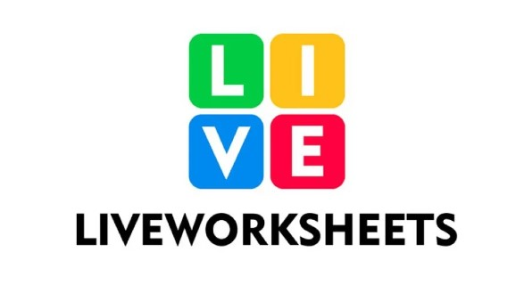
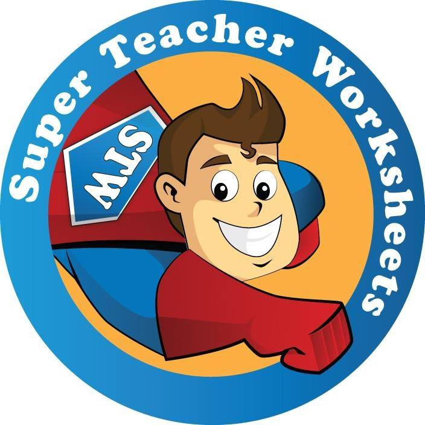
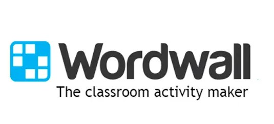

Liveworksheets es una página web donde los profesores pueden encontrar y crear material didáctico interactivo y para imprimir. Ofrece una gran variedad de ejercicios que puedes personalizar y compartir con tus estudiantes.
----------------------------------------------------------------------------------------------------------------------------------------------------------
Este generador de sopas de letras te permite crear actividades personalizadas para tus estudiantes. Es una excelente herramienta para repasar vocabulario en clases de inglés.
----------------------------------------------------------------------------------------------------------------------------------------------------------
Wordwall ofrece juegos interactivos que los profesores pueden usar para dinamizar sus clases. Es una herramienta que permite crear actividades personalizadas como crucigramas, sopa de letras y más.
----------------------------------------------------------------------------------------------------------------------------------------------------------
Interpals es una plataforma donde puedes practicar inglés conversando con personas de todo el mundo. Es ideal para mejorar las habilidades de conversación y practicar con hablantes nativos.